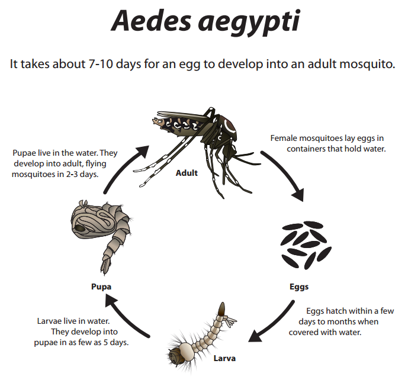
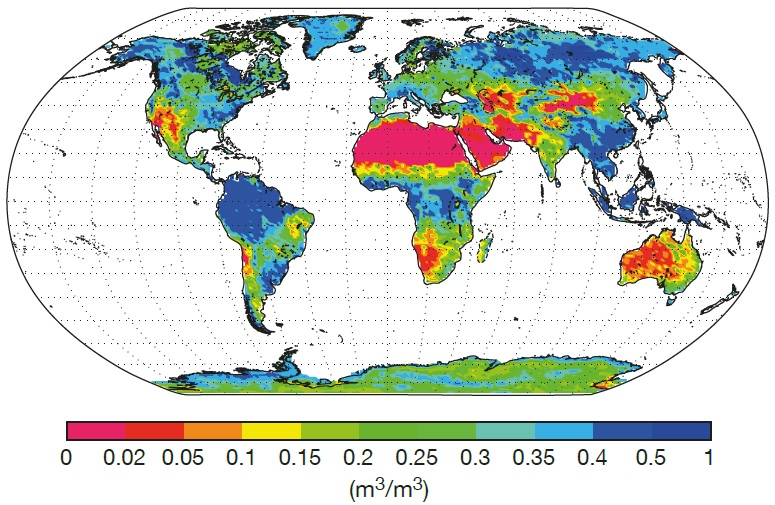
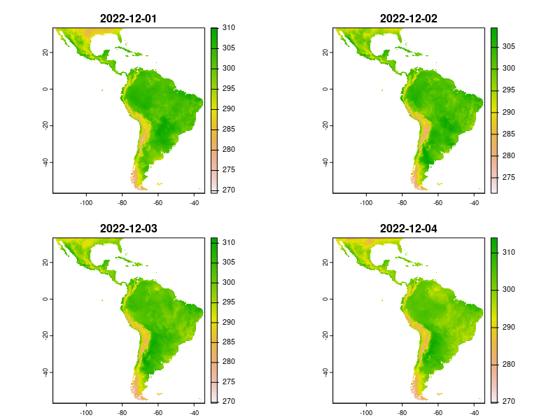
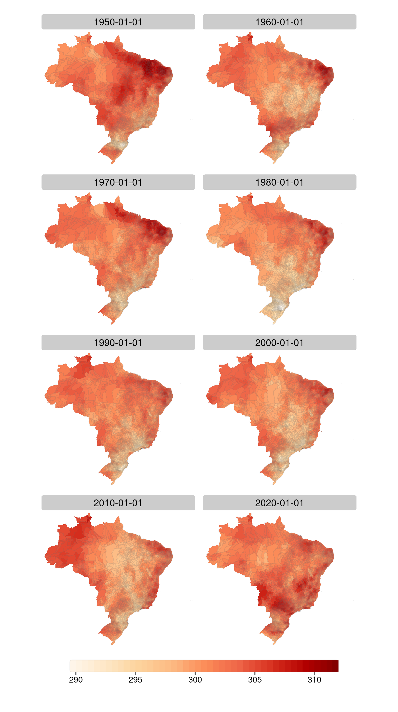

%%{
init: {
'theme': 'base',
'themeVariables': {
'fontSize': '30px'
}
}
}%%
flowchart LR
climate(Climate) --> vector(Disease vectors) --> health(Human health)
climate --> health
climate --> social(Social & economic \n determinants) --> health
Disease and climate data fusion for modelling
An application case for Brazil
isntd
climate
data
Talk at the Climate and Health for Health Situation Studies Workshop, IRD.
Introduction
- Postdoctoral researcher at Inria, a French research institute for digital science and technology
- Fiocruz, Climate and Health Observatory collaborator
- BSC, Global Health Resilience collaborator
Climate sensitive diseases
Direct relationship: floods, droughts, heat waves…
Indirect relationship
- Climate necessary conditions to vector viability, reproduction and disease transmission efficiency
- Climate indicators may act as proxy variables to vector distribution on statistical models
A time-lagged relationship
- Vector life cycle in a time perspective
- Climate conditions from the past leads to the disease incidence of tomorrow

Climate data
- Data sources
- In situ: Weather stations, rain gauges
- Remote: Satellites, drones
- Data products
- Statistical surface interpolations
- Model reanalysis
Climate reanalysis
ERA5-Land reanalysis
- Copernicus, ECMWF
- Global coverage
- Hourly data
- 1950 to the present (one week delay)
- Spatial resolution ~9km
- Several climate indicators

Data structures
- Climate indicators: grid data
- Disease incidence: tabular, individual cases aggregated by spatial regions and time spans


Fusioning data

Case example
Zonal Statistics of Climate Indicators from ERA5-Land for Brazilian Municipalities
- 8 climate indicators: maximum, minimum and average temperature, total precipitation, surface pressure, dewpoint, \(u\) and \(v\) components of wind
-
6 zonal statistics computation for the 5,570 Brazilian municipalities
- Minimum, maximum, average, sum, standard deviation, cell count
- Time coverage: 1950-2022, daily data
Workflow
%%{
init: {
'theme': 'base',
'themeVariables': {
'fontSize': '30px'
}
}
}%%
flowchart TD
era5(ERA5-Land \n indicators) --> hdata(Hourly data)
bb(Latin America \n bounding box) --> hdata
hdata --> agg(Aggregation to \n daily data)
agg --> mun(Municipal boundaries)
mun --> zs(Zonal statistics)
ERA5-Land hourly to daily aggregation
- Usage of {KrigR} package to access the Copernicus Climate Data Store API, crop data at server side, download and perform the time aggregation.
download_ERA(Variable = "2m_temperature", DataSet = "era5-land",
DateStart = "2022-12-01", DateStop = "2022-12-31",
TResolution = "day", TStep = 1,
FUN = "max",
Extent = extent(c(-118.47,-34.1,-56.65, 33.28)),
Dir = "dir_name", FileName = "file_name.nc",
API_User = "api_user", API_Key = "api_key")- Took ~15 days to download and process the data from 8 climate indicators covering the Latin America region
ERA5-Land Daily datasets
- Open data, available at Zenodo
- 7,105 files, 658.7 GB
- Reproducible R scripts
- Plans to continuously update this dataset and add more indicators

https://rfsaldanha.github.io/data-projects/era5land-daily-latin-america.html
Zonal statistics
- Challenge to handle the amount of data
- ~ 4 billion computational tasks
- Strategy
- Group the tasks into chunks and compute in parallel
- Save results into columnar-oriented databases for fast data retrieval (duckdb and parquet)
- DAG (Directed-Acyclic Graph) approach to orchestrate computation, with the {targets} package

Computation
- Zonal statistics weighted by the fraction of the cell that is covered, with the {exactextractr} package
exact_extract(
x = rst,
y = pol,
fun = "mean"
)Results
| ERA5-Land indicators | Daily time-aggregating functions | Spatial zonal statistics |
|---|---|---|
| Temperature (2m) | mean, max, min | max, min, stdev, count |
| Dewpoint temp. (2m) | mean | max, min, stdev, count |
| \(u\) component of wind | mean | max, min, stdev, count |
| \(v\) component of wind | mean | max, min, stdev, count |
| Surface pressure | mean | max, min, stdev, count |
| Total precipitation | sum | max, min, stdev, count, sum |
6,085,749,761 records
Temperature


Precipitation


Rio de Janeiro municipalities. January 1, 2010.
Resolution and spatial variability
- Brazilian municipalities size variation
- Altamira (PA): 159,533 km2
- Santa Cruz de Minas (MG): 3 km2
- ERA5-Land cell: ~ 100 km2
- Several intersecting cells and different climate regimes
- Few intersecting cells or fractions


Next steps…
- Continuous update
- Human settlements, population-weighted zonal statistics
- Compute climate time-series features: heat waves, persistent rains, etc.
- Adopt climate products with finer resolutions when possible (CHIRPS)
- Expand methodology to other countries
- Methodological paper on reviewing phase

Thanks!
Contact, data links, R packages and short tutorials available at rfsaldanha.github.io